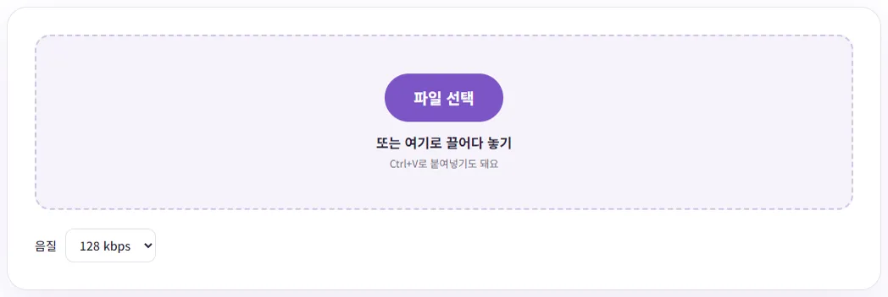
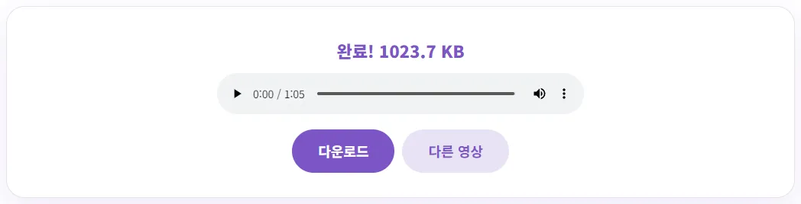

동영상에서 소리만 MP3로 뽑으려면 어떻게 할까요?
강의나 회의 녹화를 출퇴근길에 귀로만 듣고 싶은데, 영상 파일은 너무 크고 휴대폰 음악 앱에도 안 들어가서 난감하셨죠? 이 글에서는 내 영상에서 소리만 MP3로 뽑는 순서와, 음질을 몇으로 골라야 용량이 얼마나 나오는지 직접 재 본 숫자로 알려 드릴게요.
이럴 때 소리만 뽑아 두면 편해요
영상 파일에는 화면과 소리가 함께 들어 있어서, 소리만 필요할 때도 파일이 쓸데없이 커요. 이 글에 쓴 10분 56초짜리 720p 테스트 영상은 129.8MB였는데, 같은 영상의 소리만 128kbps MP3로 뽑으니 10.0MB가 됐어요. 열 배 넘게 가벼워진 거예요.
- 강의·세미나 녹화: 화면을 볼 필요가 없는 부분은 걷거나 운전하면서 들을 수 있어요.
- 회의 녹화: 회의록을 정리할 때 소리 파일만 있으면 되감기가 훨씬 가벼워요.
- 직접 찍은 영상: 내가 부른 노래나 연주, 아이 목소리만 따로 보관하고 싶을 때도 좋아요.
남이 만든 영상·강의·음악을 허락 없이 추출해서 공유하거나 배포하면 저작권 침해가 될 수 있어요. 내가 찍었거나 쓸 권리가 있는 영상에만 쓰세요.
벤토툴로 MP3 뽑기, 단계별로 따라 하기
- 동영상 MP3 추출 페이지를 여세요. 설치나 회원가입은 필요 없어요.
- '음질'에서 비트레이트를 고르세요. 강의·회의처럼 말소리 위주라면 기본값 128kbps로 충분해요. 고르는 기준은 바로 아래에서 설명할게요.
- '파일 선택'을 누르거나 영상을 화면에 끌어다 놓으면 바로 변환이 시작돼요.
- '완료!' 옆에 용량이 뜨면 재생 막대로 먼저 들어 보고 '다운로드'를 누르세요.

영상은 서버로 올라가지 않고 내 브라우저 안에서 MP3로 바뀌어요. 사내 회의처럼 밖으로 나가면 안 되는 녹화도 부담 없이 쓸 수 있어요. 1분 5초짜리 회의 녹화(MP4, 23MB)를 넣어 보니 2.1초 만에 1023.7KB짜리 MP3가 나왔고, 10분 56초짜리 영상도 13초 안팎이면 끝났어요. 아이폰으로 찍은 형식과 같은 HEVC 코덱 MOV 파일(1분)도 넣어 봤는데 1.6초 만에 문제없이 변환됐어요.
음질(비트레이트)은 몇으로 고를까요?
kbps는 1초에 몇 킬로비트를 쓰느냐는 뜻이에요. MP3는 고른 비트레이트로 일정하게 저장되기 때문에, 용량은 '비트레이트 × 길이'로 거의 정확하게 계산돼요. 같은 10분 56초 영상을 네 가지 음질로 모두 뽑아 봤어요.
| 음질 | 1분당 용량(계산) | 10분 56초 영상 실제 결과 | 이럴 때 추천 |
|---|---|---|---|
| 96kbps | 약 0.72MB | 7.5MB | 말소리만 있는 긴 녹음, 휴대폰 용량이 빠듯할 때 |
| 128kbps | 약 0.96MB | 10.0MB | 강의·회의 대부분 (기본값) |
| 192kbps | 약 1.44MB | 15.0MB | 배경음악이 섞인 영상, 악기 연주 |
| 320kbps | 약 2.4MB | 25.0MB | 음악을 최대한 좋게 남기고 싶을 때 |
1분당 용량은 1MB = 1,000,000바이트로 계산한 값이고, 도구 화면은 1,024로 나눠 보여 줘서 숫자가 살짝 작게 나와요. 걸린 시간은 네 가지 모두 13초 안팎으로 비슷했어요. 음질을 높여도 변환 시간은 거의 늘지 않고 용량만 커져요. 표로 어림해 보면 1시간짜리 강의는 128kbps로 약 58MB, 96kbps로 약 43MB예요. 한 학기 강의를 휴대폰에 담아 다닐 계획이라면 이 차이가 꽤 커져요.
원본보다 좋아지지는 않아요
한 가지 꼭 알아 둘 점은, 비트레이트를 높인다고 원본보다 소리가 좋아지지는 않는다는 거예요. 휴대폰이나 화상회의 프로그램으로 녹화한 영상은 처음부터 소리가 압축돼 저장돼 있어서, 320kbps로 뽑아도 원래 녹음보다 선명해지지 않고 파일만 커져요. 말소리 위주라면 128kbps로 먼저 뽑아 들어 보고, 부족하게 느껴질 때만 올리는 순서가 좋아요.
결과가 제대로 나왔는지 확인하는 법

- 길이 비교: 결과 화면의 재생 막대에 나오는 전체 길이가 원본 영상 길이와 같은지 보세요. 테스트에서는 1분 5초 영상이 그대로 1:05로 나왔어요.
- 앞·중간·끝 들어 보기: 받기 전에 재생 막대를 처음, 가운데, 끝으로 옮겨 가며 몇 초씩 들어 보세요. 소리가 끊기거나 빠진 곳이 없는지 확인하는 가장 빠른 방법이에요.
- 용량 어림하기: 위 표의 '1분당 용량 × 영상 길이(분)'와 결과 용량이 비슷하면 정상이에요. 1분 5초 × 128kbps는 계산상 약 1.04MB인데, 받은 파일은 1,048,241바이트였어요.
참고로 원본 소리가 한 채널(모노)이면 MP3도 모노로, 두 채널(스테레오)이면 스테레오로 저장돼요. 고른 비트레이트가 같으면 모노든 스테레오든 용량은 같아요.
뽑은 MP3, 이렇게 정리해 두면 편해요
MP3는 휴대폰, 차량 오디오, 컴퓨터 대부분에서 따로 프로그램 없이 재생되는 형식이라 보관용으로 무난해요. 다만 파일이 쌓이면 무슨 녹음인지 금방 헷갈려요.
- 파일 이름에 날짜와 주제를 넣으세요: 받은 파일은 원본 영상 이름에 .mp3만 붙어서 나와요. '2026-10-10_주간회의'처럼 날짜를 앞에 두면 이름순 정렬만으로 날짜순이 돼요.
- 원본 영상은 따로 보관하세요: MP3에는 화면이 없어서, 발표 자료나 칠판 내용을 다시 봐야 할 때는 원본이 필요해요. 용량이 부담되면 외장 저장 장치나 클라우드로 옮겨 두세요.
- 강의는 주제별로 나눠 두세요: 2시간짜리 한 파일보다 30분짜리 네 파일이 다시 찾아 듣기 훨씬 쉬워요. 영상을 먼저 나눠 자른 뒤 하나씩 뽑으면 돼요.
안 될 때, 그리고 긴 영상을 다룰 때
- '소리를 읽지 못했어요'가 뜰 때: 영상에 소리 트랙이 아예 없거나, 브라우저가 풀 수 없는 소리 형식일 때 나와요. 이 도구는 크롬·엣지가 재생할 수 있는 영상이면 대부분 돼요. 다른 브라우저에서 안 되면 크롬이나 엣지로 다시 해 보세요.
- 1시간 넘는 녹화: 이 도구는 영상의 소리 전체를 한 번에 메모리에 풀어 놓고 MP3로 만들어요. 계산해 보면 스테레오 소리를 이렇게 풀면 1분에 약 21MB, 1시간이면 1GB가 넘는 메모리를 써요. 메모리가 넉넉하지 않은 노트북에서 느려지거나 멈추면, 먼저 동영상 자르기로 필요한 부분만 남기거나 30분 단위로 나눈 뒤 뽑아 보세요. 자르는 법은 앱 설치 없이 동영상 앞뒤 자르기에 정리해 두었어요.
- 일부 구간만 필요할 때: MP3로 뽑은 뒤 자르는 것보다, 영상을 먼저 자르고 뽑는 쪽이 빠르고 메모리도 덜 써요.
회의 녹화를 글로 남기고 싶다면 MP3를 뽑을 필요 없이 영상을 바로 영상 자막 만들기에 넣으면 돼요. 자세한 방법은 영상 자막(SRT) 무료로 만들기에 따로 정리했어요.
글에서 소개한 도구, 회원가입 없이 바로 써 보세요.
🎵 동영상 MP3 추출 바로 쓰기